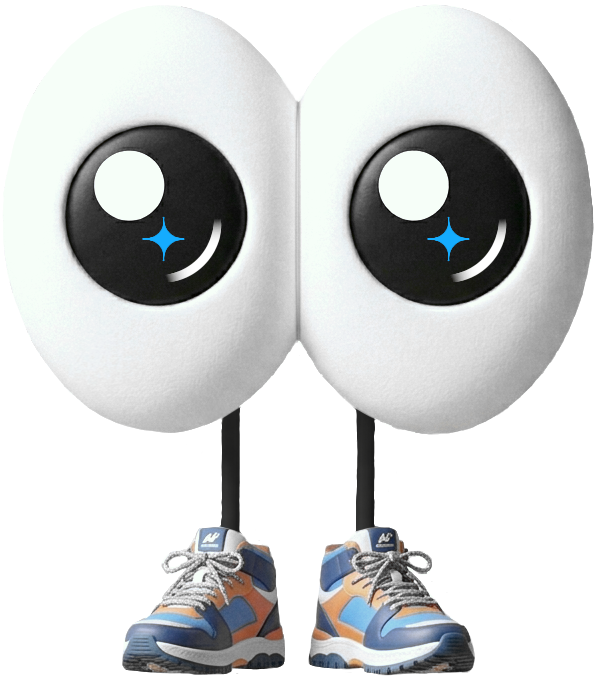
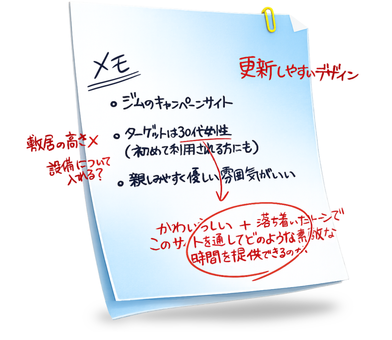
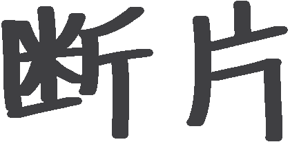
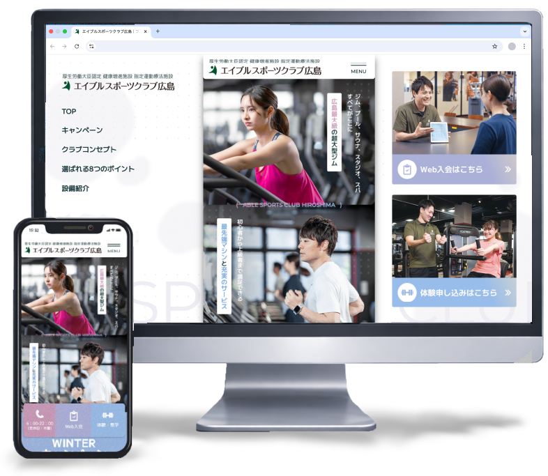
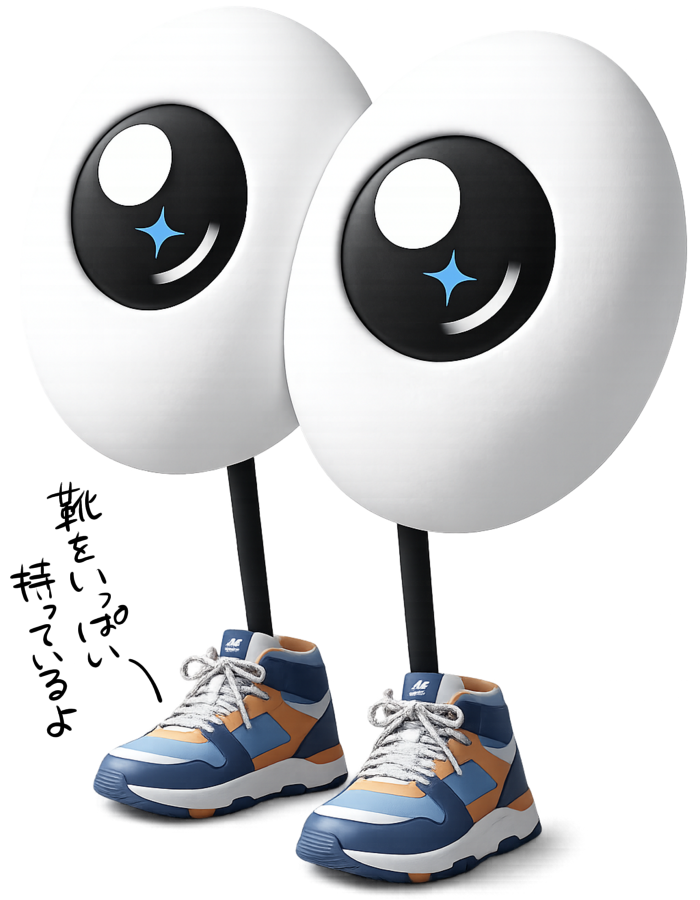
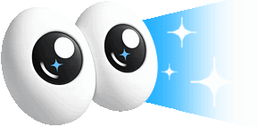

セミカワナオの
ポートフォリオ


意図を汲み取り完成に導くデザイナー

ホームページ制作会社にて4年間、Webデザインを中心に印刷物やロゴ制作など幅広いデザイン業務に携わってまいりました。

目玉人（んちゅ）
情報整理からデザイン設計まで、イッカンして対応できます。 メモや箇条書きの情報からでも目的や意図を丁寧に汲み取り、見た目の美しさだけでなく意味を持ったデザインを行います。

リレキショ

リレキショ
2026年 現在
| ふりがな | せみかわ なお | |
| 氏名 | 蟬川 菜央 | |
| 年齢 | 満 25歳 | |
| ふりがな | ひろしまけん ひろしまし | |
| 現住所 | 〒123-4567 広島県 広島市 | |
| 西暦 | 月 | 学歴・職歴・スキル |
|---|---|---|
| 学歴 | ||
| 2019年 | 4 | 比治山大学短期大学部 美術科 入学 |
| 2021年 | 3 | 比治山大学短期大学部 美術科 卒業 |
| 職歴 | ||
| 2021年 | 4 | HP制作会社 入社 |
| 2025年 | 5 | HP制作会社 一身上の都合により退職 |
| 訓練歴 | ||
| 2025年 | 12 | 委託訓練 入校 |
| 2026年 | 3 | 委託訓練 修了 |
| 以上 | ||
| スキル | ||
| 前職では主にFireworksを使用しており、Illustrator/Photoshop/XDの操作も可能です。 また、チャットツールではChatwork/Lark/slackの使用経験があり、コーディング・STUDIO・Gitについての基礎知識も有しています。 未経験のツールでも積極的に学び、柔軟に対応いたします。 | ||
ワークス
ワークス


女性のジムデビュー応援
Web
安心を伝えるカタログ
グラフィック
未来の街並みを伝える
イラスト・ほか
黒から伝える情報
Web
あったらいいなこんな島
イラスト・ほか
目を惹く青
Web
バナー類のデザイン
イラスト・ほか
うちの猫みてほしい
自主制作
のぞいてみて
自主制作